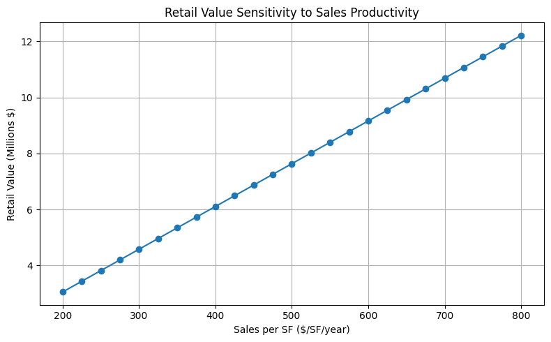

Retail is the most fragile land use we have discussed in class. Retail revenue hinges on sales per square foot keeping up with set capitalization rates and precarious operating expenses. Consumer spending patterns and retailer competency are just a couple factors that affect sales. Standalone retail often does not pencil in downtown areas where land prices are high. Threshold logic refers to the point in development at which traffic is high enough to justify retail, even at a loss.
| Scenario | Retail RLV | Viable? |
|---|---|---|
| Standalone | -$330,666.67 | No |
| Apartment Uplift | $766,933.33 | Yes at $3.50/SF |
| Low Office Occupancy | -$29,760.00 | No at 79% occupancy |
Required apartment rent uplift: $0.
In our scenario, the rental uplift is $0.75 and generates $49 million in net system value change. However, setting Assumptions cell B15 to zero still produces $6.8 million in net system gain as long as the rent/SF is set at $2.75.
Is the rental uplift realistic?
If we assume that 250,000 SF apartment space equals 312.5 units at 800 SF each, the monthly rent is $2,200 at $2.75/SF. With the rental uplift of $0.75/SF, the rent is $2,800/SF. According to Zillow Rentals (March 8, 2026) the average rent in DC is $2,450/month. This means the rental uplift triggered by the toggle ($0.75) is probably too high if the average apartment is only 800 SF.
Is public subsidy justified?
Housing subsidies are common in DC and elsewhere to ensure cities remain equitable and affordable. A combination of funding from the Housing Production Trust Fund, public/private bonds, etc. can reduce the cost of financing housing, which in turn makes it possible for mixed-income neighborhoods to exist. Supply-side financing mechanisms are an important tool for ensuring the public interest in urban design and development. It is in the public interest that workers of all incomes be able to live near their workplaces (even in the CBD), that schools be integrated across income bands, etc. From an economic point of view, making affordable housing available in or near the CBD could reduce commuting costs, making labor cheaper. It also creates 24/7 demand for goods, which boosts retail demand.

Public capital should support retail that provides a measurable public good such as neighborhood vibrancy, better public health outcomes, local innovation, job creation or increased tax revenue.
Examples include: